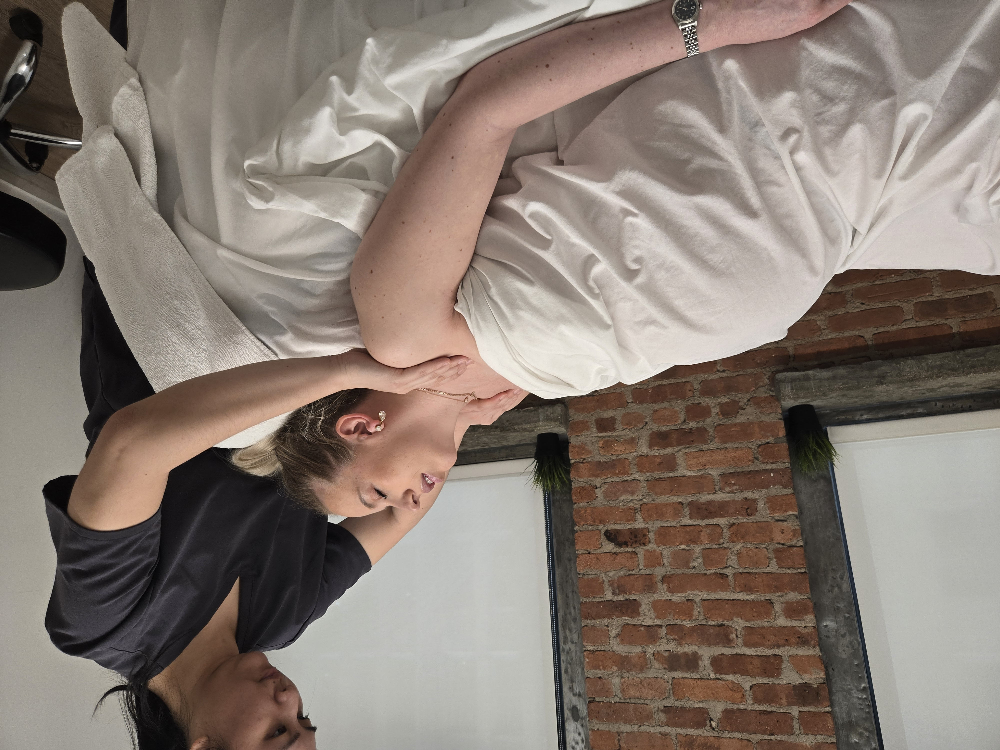

A selection of unedited notes from clients — sedentary professionals, athletes mid-season, post-surgical patients, and pregnant clients. Conditions are listed where the client gave permission.

Filter
"
Lily is absolutely amazing! I started seeing her about 4-5 months into pregnancy, struggling with severe lower back pain, fluid retention, and just overall pregnancy jitters. I can honestly say Lily was THE reason my pregnancy was physically easy to get through from that point onwards! She is extremely skilled, professional and knows what she is doing. My body felt amazing and I was able to work comfortably to my due date and be physically active the entire time. I saw her on average once a week and she literally put my body back together every time. We also have the best conversations! I recommend her to everyone for pregnancy massages and other medical massages — she is full stack. Cannot recommend her enough!
"
I've been seeing Lily regularly for the past five years, and I can't recommend her highly enough. Her massages and DDS therapy have made a huge difference for my chronic headaches, back pain, shoulder tension, and neck pain. I always leave feeling so much better and more relaxed. What sets her apart is that she's not only very skilled but also a great listener. She takes the time to really understand how I'm feeling before every session, which makes the treatment that much more effective. If you're dealing with pain or tension, do yourself a favor and book with Lily. Truly one of the best massage therapists I've ever been to!
"
I've been seeing Lily for nearly five years, and I truly can't imagine my wellness routine without her. I originally started seeing her because of persistent neck and back pain from spending 10+ hours a day working at a computer, and her work made an immediate difference. She has helped release years of built-up tension and stress, and regular sessions with her became a non-negotiable part of how I take care of myself. What sets Lily apart is how intuitive and attentive she is. She has a natural ability to pinpoint the source of pain and tension, while also taking the time to truly listen to feedback and tailor each session to the areas that need the most attention. You can genuinely feel the level of care, skill, and intention she brings to her work. I always leave feeling physically lighter, more relaxed, and reset both mentally and physically.
"
I came in to see Lily for neck and shoulder pain about a year ago and I only have great things to say about my experience! She is wonderful and listens to your complaints and concerns. She is great at loosening up tight, deep knots. My neck and shoulder pain has greatly improved since I've started seeing her. Highly recommend giving her a visit!
"
Lily is a true professional who genuinely cares about her clients. She took the time to listen to my concerns, quickly diagnosed my problem areas, and tailored the massage to exactly what my body needed. She even shared great advice for stretching at home. She is knowledgeable, intuitive, and worth every penny. She has great personality and is very pleasant.
"
Lily is a miracle worker! I've been dealing with intense tension in my shoulders, and Lily knew exactly how to target the problem areas without it being overwhelmingly painful. Lily genuinely understands anatomy and tailors the pressure perfectly to what my body needs. I left feeling lighter, more aligned, and with significantly more mobility. 10/10